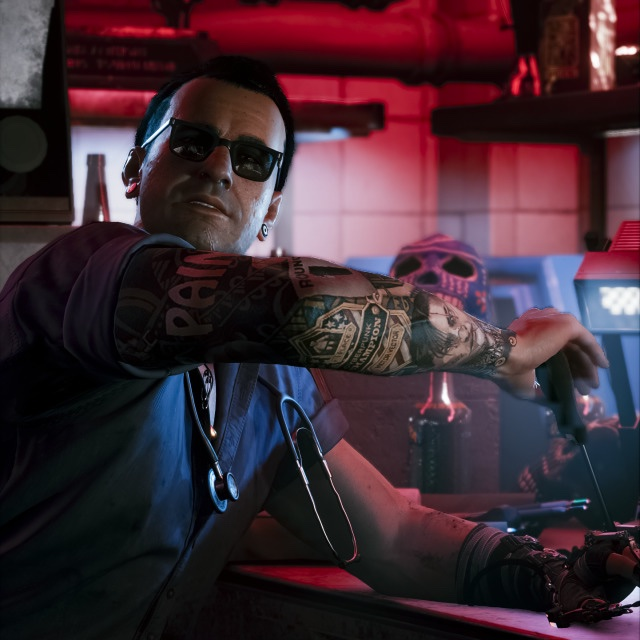

Lore des personnages
Viktor Vektor

Description
Viktor Vektor, aussi appelé Vik est un charcudoc dans Cyberpunk 2077. Sa clinique est accessible via l'arrière-boutique de Misty. Talentueux, patient et profesionnel, Viktor a plusieurs fois accepté d'être payé ultérieurement, sans jamais se plaindre.
| Alias | Statut | Domicile | Sexe | Cheveux | Affiliation | Rôle | Doubleur | Aparait dans |
|---|---|---|---|---|---|---|---|---|
| Vik Viktor Vektor Vektor |
Vivant | Quartier Watson, Night City | Homme | Noirs | Night City Devils | Charcudoc Boxer (anciennement) |
Michael Gregory | Cyberpunk 2077 |